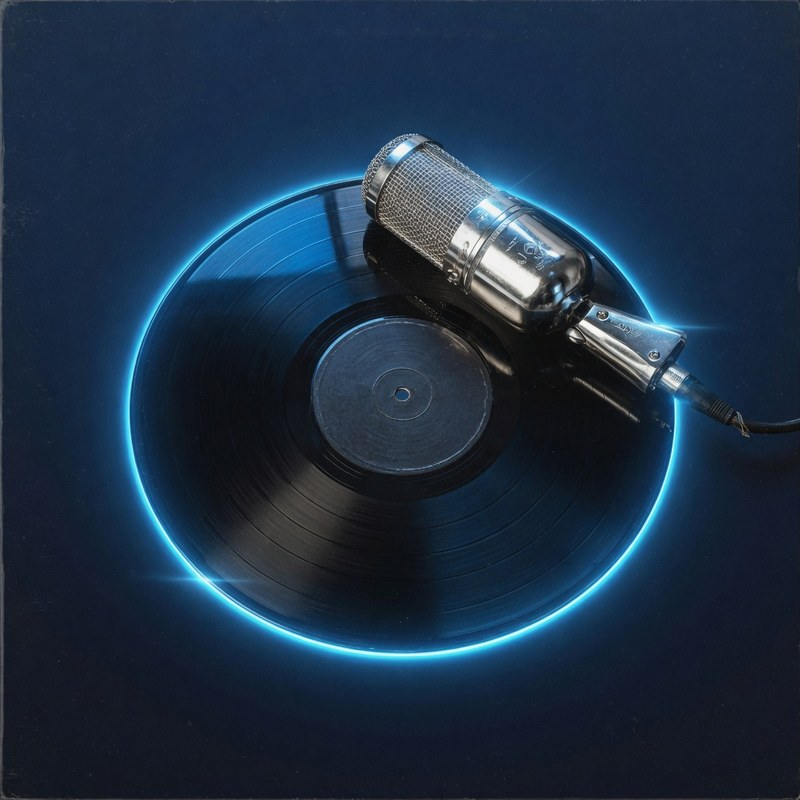

Nu op de radio

142 luisteraars
ON AIR
Muziek uit het hart
NU LIVE
PiratenKrakers.nlLive radio
DJ Nachtvlucht
De Avondploeg
Luister live
Nu op de radio

142 luisteraars
Vandaag
DJ Dennis
DJ Linda
DJ Patrick
DJ Mark
DJ Nachtvlucht
DJ Nachtvlucht
DJ Nightbeat
LIVE
PiratenKrakers.nl — Live radio
DJ Nachtvlucht — De Avondploeg
142